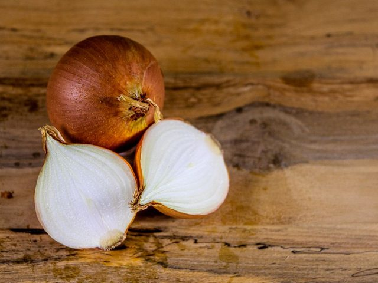
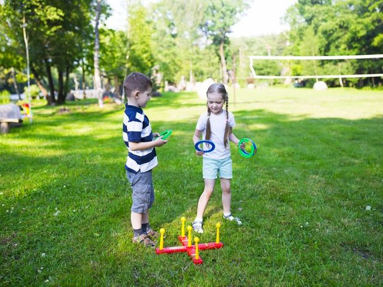
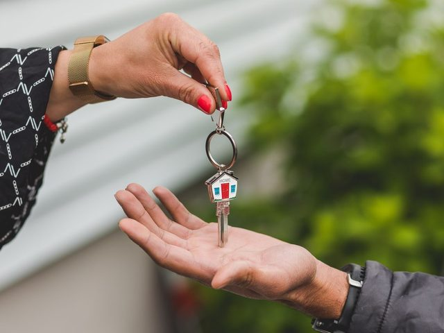
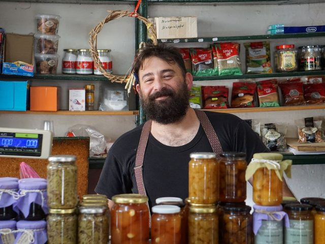

UNIT 33 · VOCABULARY
O 開頭
O
37 個單字聽・唸・用
本單元單字一覽
WORD UP「O」的 37 個字（o'clock 到 ox）。紅色＝要複習，藍色標籤＝WORD UP 標熟記、還要在這裡考對。
o'clockobeyobjectoccuroceanOctoberoffofferofficeofficerofficialoftenoiloldomitonceoneoniononlyopenoperateoperationopinionopportunityorangeorderordinaryorganizationorganizeoutoutsideovenoverpassoverseasownownerox
每個字都有 🔊，先聽發音、跟著唸，再看例句。
單字 1–4

o'clock
…點鐘adv.
It's seven o'clock.
現在七點整。
現在七點整。
🚦
obey
服從；遵守v.
We should obey the traffic rules.
我們應該遵守交通規則。
我們應該遵守交通規則。
📦
object
物體；反對n./v.
What is that object on the table?
桌上那個東西是什麼？
桌上那個東西是什麼？
❗
occur
發生v.
The accident occurred last night.
那場意外發生在昨晚。
那場意外發生在昨晚。
單字 5–8

ocean
海洋n.
Whales live in the ocean.
鯨魚住在海洋裡。
鯨魚住在海洋裡。

October
十月n.
Halloween is in October.
萬聖節在十月。
萬聖節在十月。
📴
off
離開；關掉adv./prep.
Turn off the TV.
把電視關掉。
把電視關掉。
🤲
offer
提供；提議v./n.
He offered me a seat.
他讓座給我。
他讓座給我。
單字 9–12

office
辦公室n.
Dad works in an office.
爸爸在辦公室上班。
爸爸在辦公室上班。
👮
officer
官員；警官n.
The police officer helped the old lady.
警察幫助那位老太太。
警察幫助那位老太太。
📜
official
官方的；官員adj./n.
English is an official language in Singapore.
英文是新加坡的官方語言之一。
英文是新加坡的官方語言之一。
🔁
often
常常adv.
I often go swimming in summer.
我夏天常去游泳。
我夏天常去游泳。
單字 13–16

oil
油n.
Don't use too much oil.
不要用太多油。
不要用太多油。

old
老的；舊的；…歲adj.
How old is your brother?
你哥哥幾歲？
你哥哥幾歲？
✂️
omit
省略；遺漏v.
Don't omit any words.
不要漏掉任何字。
不要漏掉任何字。
1️⃣
once
一次；曾經adv.
I go to the library once a week.
我一週去圖書館一次。
我一週去圖書館一次。
單字 17–20
☝️
one
一；一個n./pron.
I have one sister.
我有一個姊姊。
我有一個姊姊。

onion
洋蔥n.
Cutting onions makes me cry.
切洋蔥讓我流淚。
切洋蔥讓我流淚。

only
唯一的；只adj./adv.
He is the only child in his family.
他是家裡的獨生子。
他是家裡的獨生子。

open
打開；開著的v./adj.
The store is open until ten.
那家店營業到十點。
那家店營業到十點。
單字 21–24
⚙️
operate
操作；動手術v.
Can you operate this machine?
你會操作這台機器嗎？
你會操作這台機器嗎？

operation
手術；操作n.
Grandpa had an operation on his heart.
爺爺動了心臟手術。
爺爺動了心臟手術。
💭
opinion
意見；看法n.
In my opinion, the movie is boring.
依我看，這部電影很無聊。
依我看，這部電影很無聊。
🚪
opportunity
機會n.
This is a great opportunity.
這是個大好機會。
這是個大好機會。
單字 25–28

orange
柳橙；橘色的n./adj.
I'd like a glass of orange juice.
我要一杯柳橙汁。
我要一杯柳橙汁。

order
順序；命令；點餐n./v.
May I take your order?
請問要點什麼？
請問要點什麼？
😐
ordinary
普通的adj.
It was just an ordinary day.
那只是普通的一天。
那只是普通的一天。
🏛️
organization
組織；機構n.
She works for an international organization.
她在一個國際組織工作。
她在一個國際組織工作。
單字 29–32
🗂️
organize
組織；整理v.
Let's organize a party for Mom.
我們幫媽媽辦個派對吧。
我們幫媽媽辦個派對吧。
🚶
out
出去；在外adv.
Let's go out for dinner.
我們出去吃晚餐吧。
我們出去吃晚餐吧。

outside
在外面adv./prep.
The kids are playing outside.
孩子們在外面玩。
孩子們在外面玩。

oven
烤箱n.
Put the cake in the oven.
把蛋糕放進烤箱。
把蛋糕放進烤箱。
單字 33–36

overpass
天橋；高架橋n.
Use the overpass to cross the road.
走天橋過馬路。
走天橋過馬路。
overseas
海外的；在國外adj./adv.
My cousin is studying overseas.
我表哥在國外留學。
我表哥在國外留學。

own
自己的；擁有adj./v.
I have my own room.
我有自己的房間。
我有自己的房間。

owner
主人；擁有者n.
Who is the owner of this bike?
這台腳踏車是誰的？
這台腳踏車是誰的？
單字 37–37

ox
公牛；牛n.
The ox is pulling a cart.
那頭牛在拉車。
那頭牛在拉車。
重點整理
| 說法 | 中文 | 例子 |
|---|---|---|
| turn on / turn off | 打開 ／ 關掉（電器） | turn off the light |
| in my opinion | 依我看 | In my opinion, it's too expensive. |
| once / twice / three times | 一次 ／ 兩次 ／ 三次 | once a day |
| offer + 人 + 東西 | 提供某人… | offer him a job |
| operate / operation | 操作、動手術 ／ 手術 | have an operation |
| organize / organization | 組織（動詞）／ 組織（名詞） | organize a trip |
| my own / on my own | 我自己的 ／ 我獨自 | my own room ／ do it on my own |
ox 的複數是 oxen；o'clock 只用在整點：seven o'clock。
快問快答：中文 → 英文
1…點鐘o'clock
2物體；反對object
3海洋ocean
4離開；關掉off
5辦公室office
6官方的；官員official
7油oil
8省略；遺漏omit
快問快答：英文 → 中文
1one一；一個
2only唯一的；只
3operate操作；動手術
4opinion意見；看法
5orange柳橙；橘色的
6ordinary普通的
7organize組織；整理
8outside在外面
學完了！接下來
複習方法
review
- 回到「📗 單字卡」，按「遮中文」自己考自己
- 再按「遮英文」，看中文說出英文
- 每個例句跟著 🔊 唸一次
準備好了
- 按右上角「📝 前往測驗」
- 測驗錯的題目要訂正到全對
- 訂正完成補送 1 點